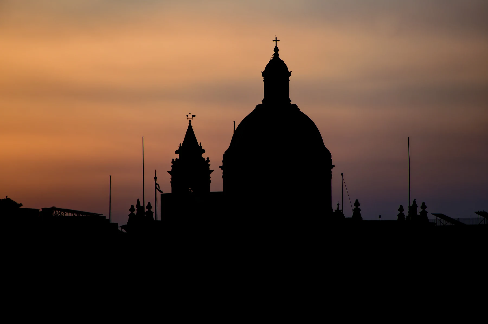

The inventory shows a shared locality centroid, not the building. It cannot establish a historic-core position, nearest stop, parking arrangement, gradient, view or entrance.

ĦAŻ-ŻABBAR · PORT REGIONHistoric centre.
Historic centre.
Residential edges.
Żabbar has a sanctuary-led centre, the Hompesch approach and wider residential edges towards several neighbouring localities. The locality name alone cannot tell you which setting belongs to a home.
READ THE ADDRESS
One city, several approaches.
The sanctuary core, Hompesch Gate and the roads towards Fgura, Xgħajra, Kalkara, Marsaskala and Żejtun are not interchangeable. Confirm the full address, entrance, street approach and permitted route before planning a viewing.
Żabbar is distinct from Fgura, Xgħajra, Kalkara, Marsaskala and Żejtun. Verify both the locality label and the actual street rather than relying on a nearby landmark.
Bus corridors are not walking or driving estimates. Any future route needs real endpoints, routed geometry, a named mode and a current source.
A historic core, not every address.
The Local Council and Archdiocese document the Hompesch city title, the sanctuary and the older centre. That supports place context but does not place a current listing beside the church, museum or gate.
Archdiocese of Malta — Ħaż-Żabbar parish ↗The wider city needs a street check.
The Hompesch approach and residential edges lead towards different neighbouring localities. Council references to countryside or rocky coast describe the wider municipality, not guaranteed proximity, access, quietness or outlook from a home.
Ħaż-Żabbar Local Council ↗EVERYDAY CHECKS
Build the viewing around live information.
These current service and operator pages help structure a visit. They do not prove which option is nearest to a particular home. Recheck stops, schedules, services, hours and the real street route on the day.
Route 90
Malta Public Transport currently lists a Valletta–Żabbar corridor with named Żabbar stops. Timings and the useful stop stay on the live timetable.
Current Route 90 ↗Route 94
The operator currently shows Żabbar stops on the separate Valletta–Xgħajra corridor. This is scheduled service, not a fixed journey time for a listing.
Current Route 94 ↗Community Clinic
Primary HealthCare identifies Żabbar Community Clinic at the Civic Centre on Triq iċ-Ċawsli. Services follow current schedules and appointments.
Primary HealthCare ↗Operator-verified choices
Scotts lists a Żabbar supermarket near Hompesch Gate, while The Convenience Shop lists two Żabbar branches. Neither is a nearest-store or access claim.
Scotts locator ↗ · MyConvenience locations ↗CITY & HERITAGE
Four ways to read Żabbar without borrowing Xgħajra's coast.
The sanctuary, Hompesch approach, museum and wider municipal edge tell different parts of Żabbar's story. None establishes that a listing is in the old centre, beside an attraction or connected by a simple walking route.
Our Lady of Graces
The Archdiocese dates the present sanctuary from 1641 to about 1696. Visit respectfully and use the live parish page for present services or access; the history is not a property-location claim.
Archdiocese parish page ↗Hompesch Gate
The council records Żabbar's 1797 city title and the triumphal arch on the approach from Paola through Fgura. That is a historic urban axis, not a promise about traffic, parking or distance from a home.
Council locality history ↗Sanctuary Museum
The museum belongs to the local heritage story, but reliable current visitor arrangements can change. Confirm access through a current official channel before planning a visit.
VisitMalta destination search ↗Do not import a coast
Council references to countryside and rocky shoreline describe the wider municipality. They do not place inland Żabbar homes beside the sea or turn neighbouring Xgħajra into a walkable amenity.
Council context ↗FOUR CURRENT LICENCE RECORDS
A register snapshot, not a restaurant ranking.
The MTA's Żabbar filter returned four restaurant records when reviewed on 27 October 2026. These establish licensed names, references and recorded streets only. They do not describe current menus, quality, prices, opening, accessibility or proximity to a home.
Celine's · Ottoman by Posh
The register lists Celine's Restaurant as RST-32314 at 52 Triq is-Santwarju and Ottoman by Posh Restaurant as RST-21419 on the same named street. They are evidence, not ranked picks.
Filtered MTA register ↗Kebab Co · Zeffie's
Kebab Co Restaurant appears as RST-34100 on Triq Villabate; Zeffie's Bistro & Pizzeria appears as RST-28516 on Triq Hompesch. The names do not verify today's menu or opening.
Review all four records ↗Check the operator directly
Licence records can change and do not replace an operator check for reservations, prices, dietary needs or accessibility. Choose by current requirements rather than an invented “best of” order.
A centroid is not a route.
This preview draws no route. The shared Żabbar coordinate is only an area-level map centre and cannot identify a property, sanctuary approach, nearby coast or useful stop. Any future itinerary must name real endpoints, follow routed geometry and identify the mode and source.
Open the Żabbar overview only when needed.
The map frames Żabbar and surrounding place labels for orientation. It deliberately draws no council boundary, property pin, route, straight line, distance or travel time and loads from OpenStreetMap only after your click.
Ħaż-Żabbar Local Council · Council and Port Region context · Archdiocese of Malta · VisitMalta destination search · Malta Public Transport Route 90 · Route 94 · Primary HealthCare · Scotts · The Convenience Shop · MTA Żabbar restaurant register
Neighbourhood edition. No ranking, fixed opening hour, service availability, menu, property-specific distance, guaranteed view, parking claim, accessibility promise, route or journey time is implied.
Continue with the Paola (Raħal Ġdid), Ix-Xgħajra, Kalkara, Żejtun and Marsaskala editions, or return to all neighbourhoods.